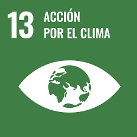
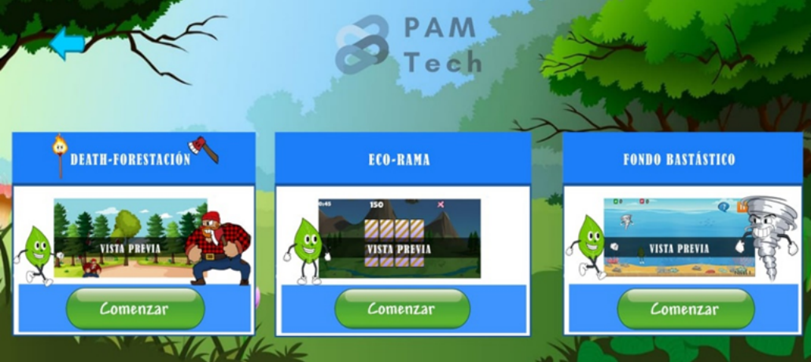
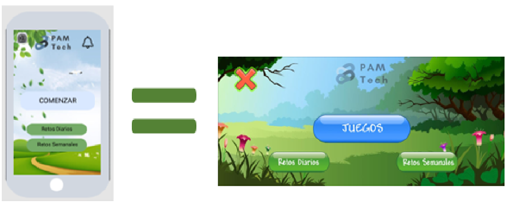
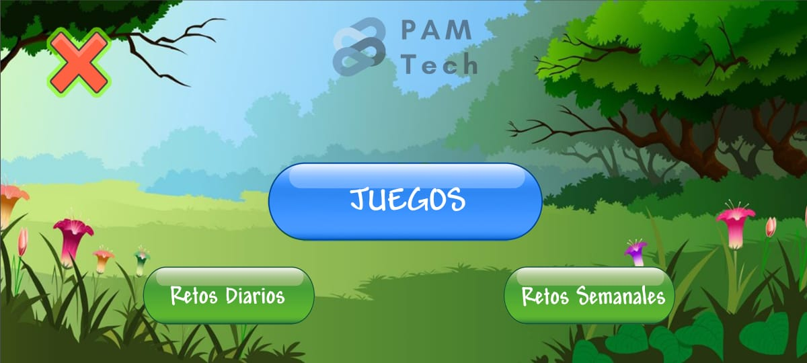
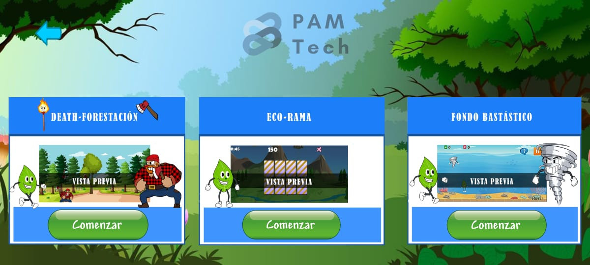
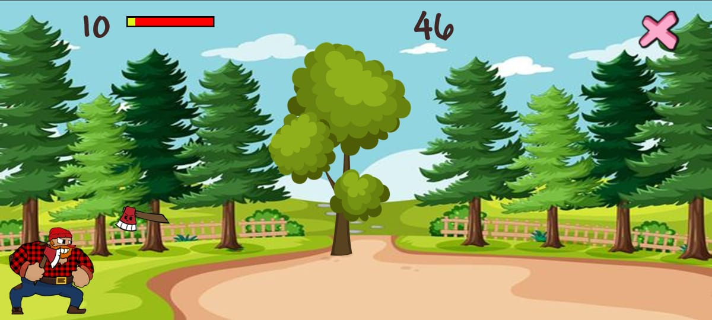
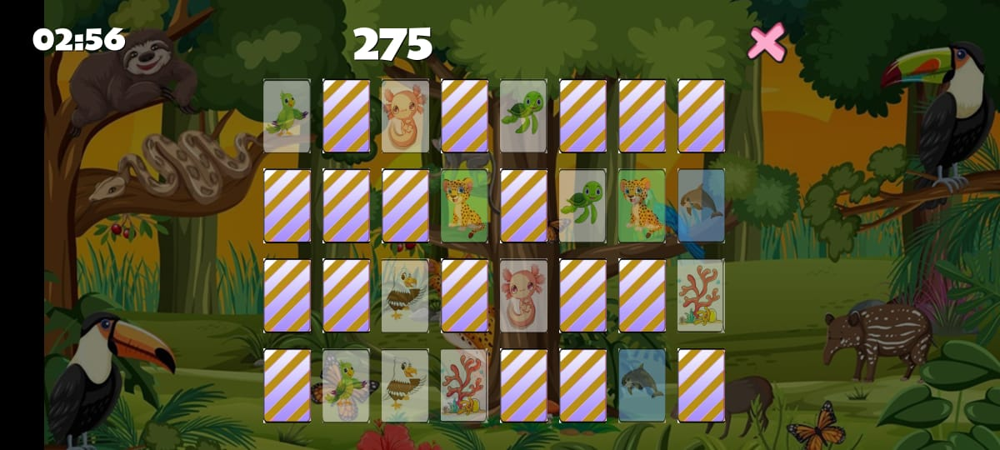
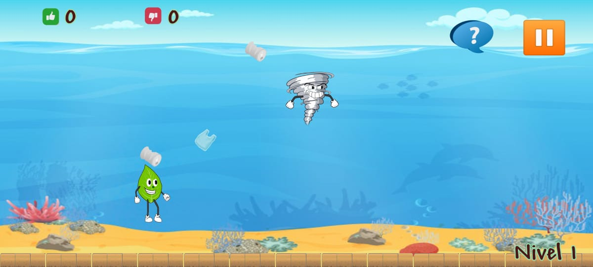
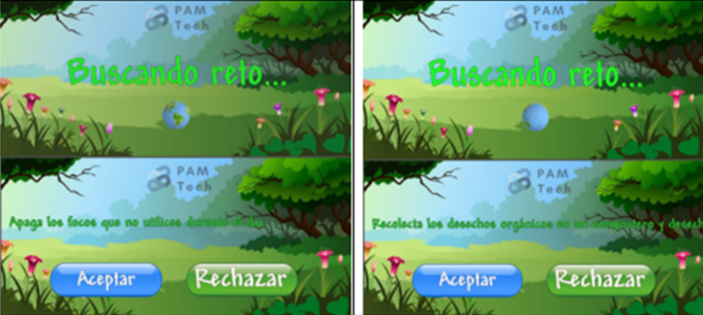

Somos un equipo conformado: por Perla María Pereyra Medina, Aitor Eduardo Ceballos Escobar, Marcos Osorio Rodrigues Piña estudiantes y también contamos con nuestros asesores: Ing. Alberto Enrique García Gómez y el LI. Aurelio López Ovando. Somos estudiantes del CECYTE Campeche T.M cursando la carrera de Mecatrónica. Somos un equipo con ideas innovadoras que, basándonos en la ODS número 13 de las naciones unidas, creamos esta aplicación buscando combatir y minimizar las consecuencias del cambio climático, apuntando a nicho infantil para generar conciencia acerca de estos temas.

Crear una app educativa con métodos didácticos como son los videojuegos que permita generar emociones de rechazo, preocupación, urgencia, empatía y simpatía a situaciones relacionadas con el cambio climático y el deterioro ambiental, sin causar adicción a los videojuegos o dispositivos móviles.
OBJETIVOS SECUNDARIOS
Fomentar ideas y conductas que nos permitan reducir las causas del deterioro ambiental y el cambio climático en nuestra entidad y en el mundo.
Promover la educación ambiental en niñas y niños en nuestra entidad.
Actualmente, el deterioro ambiental es una de las mayores amenazas para nuestro planeta.
El deterioro ambiental se produce debido a distintos daños al medio ambiente. Los factores del deterioro ambiental son muy variados; desde cosas tan “insignificantes” como tirar una basurita al mar, o situaciones más complejas y de mayor tamaño como la contaminación de las industrias textiles.
Si bien el deterioro ambiental tiene muchas consecuencias, siendo redundantemente el mismo deterioro ambiental una de ellas, hay una que se levanta frente a las otras y que nos tiene alarmados por el peligro que esta conlleva. Estamos hablando del cambio climático.
El cambio climático hace referencia a los cambios a largo plazo de las temperaturas y los patrones climáticos.
Estos cambios pueden ser naturales, pero desde el siglo XIX, las actividades humanas han sido el principal motor del cambio climático, debido principalmente a la quema de combustibles fósiles, como el carbón, el petróleo y el gas, lo que produce gases que atrapan el calor.
Las emisiones de gases de efecto invernadero cubren la Tierra y retienen el calor del sol. Esto conduce al calentamiento global y al cambio climático. El mundo se está calentando más rápidamente que en cualquier otro momento de la historia registrada.
Las consecuencias del cambio climático son situaciones a las que no queremos llegar, ya que implicaría que la vida como la conocemos dejaría de ser y daría lugar a una realidad casi apocalíptica.
Hablamos de un punto de no retorno, en el cual la tierra perdería la capacidad de recuperarse del daño que le hemos causado. A pesar de que aún no hemos cruzado el umbral del punto de no retorno, tampoco es que estemos muy lejos, y en la actualidad, nos acercamos cada vez más y más rápido a ese umbral.
Toda esta problemática se ve reflejada en nuestra entidad, y todo esto potenciado por una notablemente pobre educación ambiental, si bien hay intentos de soluciones o por lo menos alternativas, no se ha podido obtener los resultados esperados. Esta es una problemática muy relevante y urgente en nuestra entidad, pero no es ni de broma una problemática endémica, sino que es una problemática mundial.
Sin duda alguna este es un tema preocupante que ha encendido las alarmas en los líderes mundiales.
Es por todo esto que la ONU sacó los objetivos de desarrollo sustentable (ODS), las cuales son iniciativas para acabar con la pobreza, proteger al planeta y a las personas; pero de entre todo el conjunto de ODS, hay uno en específico que es el que nos concierne, el cual, es el ODS número 13.
La ODS consiste en adoptar medidas urgentes para combatir el cambio climático y sus efectos.
Es por ello que en base al ODS número 13 de las naciones unidas, al claro deterioro ambiental aquí y en el mundo y a la pobre educación ambiental que hay; creamos y desarrollamos nuestro proyecto Eco-style.
Eco-style es una app con objetivo educacional que, mediante una historia corta e interactiva relacionada con el cambio climático y ambiental, minijuegos sencillos con pantallas de carga relacionados con lo mismo y retos diarios, que son actividades diarias sencillas que se pueden hacer para evitar el cambio climático y el deterioro ambiental.
Para llevar una secuencia y que todo tenga más coherencia dentro del juego, se escribió una historia donde nuestro protagonista, es quien pelea y soluciona todos los problemas que causan los distintos villanos. En la historia, se hará mención de cómo surgen las problemáticas de cada tema a abordar, la contaminación, la tala de árboles, el cuidado del agua, etc.
Actualmente solo tenemos los niveles que tratan la tala de árboles y la contaminación, además de dos mini juegos más que no entran directamente dentro de la historia principal. Podemos decir que como pendientes a corto y mediano plazo es realizar los mini juegos relacionados al cuidado del agua y cuidado de la electricidad e integrarlos dentro de la historia principal, además de mejorar los que ya tenemos hechos.
Al ser una aplicación sencilla en su forma de lanzamiento, se propone agregar ciertas características “extra” para que se vuelva un poco más completa y que mejore la experiencia del usuario. Por lo que primeramente lo que se tiene planeado es con la página web antes propuesta, hacer de soporte para el aprendizaje de la educación ambiental de los usuarios de la app, para tener esa relación, didáctica por parte de la app e informativa por parte de la web, contando con información que solo será de fuentes confiables y verídicas para evitar malos entendidos.
Por lo que también se consideraría la idea de los retos diarios como algo que se podría mejorar, añadiendo nuevos y divertidos retos para que el niño(a) evite tener ese estilo de vida sedentario al ser más activo, creativo y saludable, avisando y recordando al usuario por medio de notificaciones, además que a modo de evidencia se podrá utilizar la cámara para tomar fotos en donde el usuario este realizando estas actividades, para que al término del mes (periodo del lapso aún en discusión) puedas ver tú y tu tutor, todo lo que realizaste y aprendiste en un mini albúm a modo de retroalimentación.
Si bien la aplicación está destinada a un público preescolar, la idea en general podría aplicar para todo público, y solo es cuestión de saber incluir o proporcionar estas herramientas de acuerdo a las necesidades del público; aprovechando el auge e influencia que tienen las redes sociales en el público adolescente-adulto, se podría hacer una app o extensión a parte para que ellos también puedan adquirir o reforzar sus conocimientos sobre el cambio climático y la importancia de llevar un estilo de vida ecológico y saludable. Donde podría haber un tablón donde los usuarios logeados puedan compartir ya sea fotos, propuestas, datos informativos, además de la creación de salas de diálogo para gente interesada en hablar sobre temas del medio ambiente, deterioro, cambio climático, etc… Además de añadir más minijuegos, incluyendo más temáticas relacionadas al cambio climático, mejorar la interfaz de inicio, optimizar los juegos ya hechos RECURSOS HUMANOS Y MATERIALES
Utilizamos un formato de juego para hacerlo más llamativo y entretenido, debido a que habíamos considerado una interfaz vertical para nuestra aplicación, pero cómo al final resultó ser una app de videojuegos consideramos utilizar una interfaz horizontal de tal modo que quedara el móvil acostado, esto para hacer más cómodo al usar y jugar con mayor facilidad.
Primeramente, tenemos la pantalla de inicio, que es la pantalla principal donde encontraremos 3 botones principales, uno para acceder a los minijuegos (botón azul) y dos botones un poco mas pequeños (botones de color verde) estos últimos son los botones de los retos diarios/semanales.
Cabe aclarar que como pasos a futuro sería cambiar la interfaz, agregando un botón en el que se comience la historia principal.
Ahora, conforme lo que tenemos actualmente, empecemos explicando el botón de los minijuegos.
Al darle a este botón, rápidamente nos mandara a la pantalla del menú de los juegos, en esta como su nombre lo indica tendremos una visualización de todos los minijuegos disponibles dentro de la app. Este apartado está hecho de una manera pensada en el futuro de la app, que en cuanto más juegos tengamos, tengamos la opción de poner una flecha para visualizar y escoger algún juego, o hacer un tipo de scroll.
Ahora pasemos a los minijuegos, estos son el paso práctico e interactivo para los usuarios. Estos minijuegos serán parte de la historia principal y cada minijuego contendrá alguna temática específica dentro de la contaminación ambiental y el cambio climático como, por ejemplo, la deforestación, la contaminación del suelo, contaminación del agua, etc.
Actualmente contamos con tres juegos, el primero es referente a la deforestación de ahí el nombre “DEATH-FORESTATION” utilizando el juego de palabras en inglés y jugando un poco con la pronunciación de las misma, el objetivo de este juego es crear un poco de conciencia sobre lo que es la deforestación, consiste en que tienes que cuidar un tu arbolito de las diferentes “trampas” (achas, fuegos, etc.) objetos que dañan o causan la deforestación. El deber del usuario es impedir que esas trampas lleguen al arbolito y que este muera, ya que cada que uno de estos objetos irá haciendo que el árbol pierda su vida hasta tal punto que se muera. Uno de los pasos futuros de este juego es hacer más niveles con más trampas e incluso ponerle dificultad en aumentar el cuidado de varios árboles a la vez, es decir que en vez de que cuides un árbol, cuides dos al mismo tiempo y así sucesivamente.
El siguiente minijuego es “ECO-RAMA”, el cual, aunque no conforma parte de la historia principal, lo pusimos y pensamos en este juego porque la temática es sobre los animales en peligro de extinción, claramente una de las consecuencias más notorias durante el paso de los años por el cambio climático y por la destrucción de los hábitats de estos animalitos, así como del calentamiento global que es el principal motivo del deshielo de los polos. Teniendo así como objetivo principal dar a conocer las diferentes especies y la gran variedad de animales que están en riesgo de desaparecer.
Actualmente solo contamos con el escenario en el fondo del mar, pero como pasos a futuro sería integrar otros escenarios con otros tipos de contaminación además de la basura.
De igual modo antes de acceder a cada minijuego, cada que el usuario quiera entrar a jugar alguno de estos minijuegos, se visualizará una pantalla de carga con un texto o una frase relacionado a la temática del mismo, será como unos tipos datos curiosos que con ayuda de la pantalla y conforme al paso del tiempo, se irán “grabando” en las mentes de los usuarios.
La finalidad de poner estas pantallas de carga es que con el tiempo y con la repetición constante de frases relacionadas a las causas y consecuencias del cambio climático y deterioro ambiental y el usuario se vaya haciendo una autosugestión con estas mismas formas de pensar.
Por su parte los restos diarios son más que nada acciones que normalmente hacemos en un día cotidiano, pero que, por alguna razón ya sea el estar ocupado, la falta de tiempo o simplemente por olvidadizo, no hacemos o se nos olvida hacer estas acciones.
Entonces pensamos en los retos diarios como solución, haciendo que el usuario se sienta retado y no obligado a cumplir con estos pequeños retos, de modo que con la repetición y la constancia se vayan haciendo el hábito de apagar la luz, recoger la basura, cerrar grifos de agua, etc.
Los retos se componen de retos diarios y retos semanales, la única característica que varía entre una y otra es el lapso de tiempo para hacer las actividades que tienen que realizar. Estas acciones, salen al azar, y tienes la opción de aceptar o rechazar el reto, en caso de rechazar te dará alguna otra opción, pero no te puedes quedar sin tu reto diario o semanal. De igual manera esta parte de la app tendrá algunas modificaciones de las que hablaremos en el apartado de mejoras a futuro.
Uno de los ejemplos de los retos diarios son:
Utiliza un vaso de agua al lavarte los dientes.
Apaga los focos que no utilices durante el día.
Desconecta los aparatos que no utilices.
Ahora de los retos semanales tenemos algunos como:
Llevar tus propias bolsas al supermercado.
Consume productos que puedan reutilizarse.
Consume productos que puedan reciclarse.
Cabe hacer la aclaración que se planea agregar más, algunos un tanto más sobre actividades físicas o de mayor plazo para realizar como sería el de realizar una composta etc.